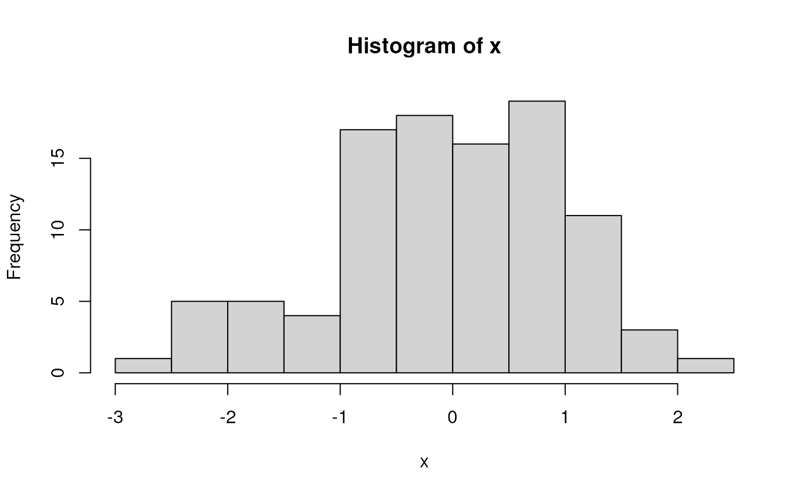
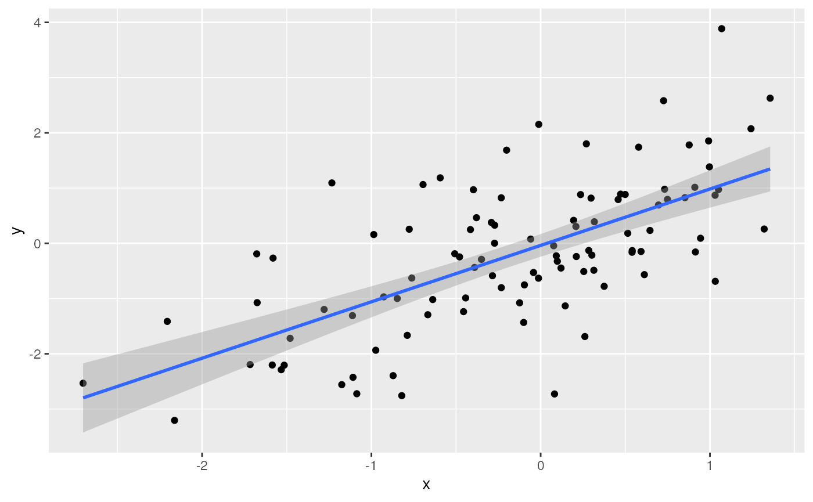

A. Introduction to R
a-intro-to-r.RmdEssential R
A simple calculator
1 + 1
## [1] 2‘Vectors’ as building blocks
c(1, 2, 3)
## [1] 1 2 3
c("January", "February", "March")
## [1] "January" "February" "March"
c(TRUE, FALSE)
## [1] TRUE FALSEVariables, missing values and ‘factors’
age <- c(27, NA, 32, 29)
gender <- factor(
c("Female", "Male", "Non-binary", NA),
levels = c("Female", "Male", "Non-binary")
)Data structures to coordinate related vectors – the
data.frame
df <- data.frame(
age = c(27, NA, 32, 29),
gender = gender
)
df
## age gender
## 1 27 Female
## 2 NA Male
## 3 32 Non-binary
## 4 29 <NA>Functions
rnorm(5) # 5 random normal deviates
## [1] -0.2998626 -0.5255044 1.2547408 -0.1241495 -0.5111058
x <- rnorm(100) # 100 random normal deviates
hist(x) # histogram, approximately normal
‘Vectorized’ operations, e.g., element-wise addition without an explicit ‘for’ loop
y <- x + rnorm(100)
plot(y ~ x)
fit <- lm(y ~ x)
fit # an R 'object' containing information about the
##
## Call:
## lm(formula = y ~ x)
##
## Coefficients:
## (Intercept) x
## -0.1510 0.8496
# regression of y on x
abline(fit) # plot points and fitted regression line
anova(fit) # statistical summary of linear regression
## Analysis of Variance Table
##
## Response: y
## Df Sum Sq Mean Sq F value Pr(>F)
## x 1 82.062 82.062 77.732 4.461e-14 ***
## Residuals 98 103.459 1.056
## ---
## Signif. codes: 0 '***' 0.001 '**' 0.01 '*' 0.05 '.' 0.1 ' ' 1Write your own functions
hello <- function(who) {
paste("hello", who, "with", nchar(who), "letters in your name")
}
hello("Martin")
## [1] "hello Martin with 6 letters in your name"Iterate, usually with lapply() although
for() is available
Packages
Extend functionality of base R. Can be part of the ‘base’ distribution…
## iterate over the numbers 1 through 8, 'sleeping' for 1 second
## each. Takes about 8 seconds...
system.time({
lapply(1:8, function(i) Sys.sleep(1))
})
## user system elapsed
## 0.002 0.000 8.010
## sleep in parallel -- takes only 2 seconds
library(parallel)
cl <- makeCluster(4) # cluster of 4 workers
system.time({
parLapply(cl, 1:8, function(i) Sys.sleep(1))
})
## user system elapsed
## 0.002 0.000 2.081…or contributed, e.g., dplyr to introduce the ‘tidyverse’
A ‘tibble’ is like a ‘data.frame’, but more user-friendly
tbl <- tibble(
x = rnorm(100),
y = x + rnorm(100)
)
## e.g., only displays the first 10 rows
tbl
## # A tibble: 100 × 2
## x y
## <dbl> <dbl>
## 1 -0.253 -0.782
## 2 1.29 -0.501
## 3 -0.408 0.728
## 4 0.620 2.00
## 5 0.587 -0.820
## 6 2.15 4.08
## 7 -0.896 0.557
## 8 0.514 -0.0915
## 9 0.0454 1.04
## 10 -0.913 -0.651
## # … with 90 more rowsThe tidyverse makes use of ‘pipes’ |>. A pipe takes
the left-hand side and pass through to the right-hand side. Key dplyr ‘verbs’ can be
piped together: filter() (rows), select()
(columns), mutate() (change values),
group_by() (operate on groups of rows)
tbl |>
## e.g., just rows with non-negative values of x and y
filter(x > 0, y > 0) |>
## add a column
mutate(distance_from_origin = sqrt(x^2 + y^2))
## # A tibble: 31 × 3
## x y distance_from_origin
## <dbl> <dbl> <dbl>
## 1 0.620 2.00 2.09
## 2 2.15 4.08 4.62
## 3 0.0454 1.04 1.04
## 4 0.201 2.16 2.17
## 5 0.990 0.160 1.00
## 6 1.76 1.58 2.37
## 7 0.402 1.69 1.74
## 8 0.00759 1.22 1.22
## 9 0.308 0.517 0.601
## 10 0.317 0.650 0.723
## # … with 21 more rowsAnother example: ggplot2 for visualization
library(ggplot2)
ggplot(tbl) +
aes(x, y) + # use 'x' and 'y' columns for plotting...
geom_point() + # ...plot points...
geom_smooth(method = "lm") # ...linear regresion
## `geom_smooth()` using formula = 'y ~ x'
Where do Packages Come From?
CRAN: Comprehensive R Archive Network. More than 18,000 packages. Some help from CRAN Task Views in identifying relevant packages.
Bioconductor: More than 2100 packages relevant to high-throughput genomic analysis. Vignettes are an important part of Bioconductor packages.
Install packages once per R installation, using
BiocManager::install(<package-name>) (CRAN or
Bioconductor)
What about GitHub? Packages haven’t been checked by a formal system, so may have incomplete code, documentation, dependencies on other packages, etc. Authors may not yet be committed to long-term maintenance of their package.